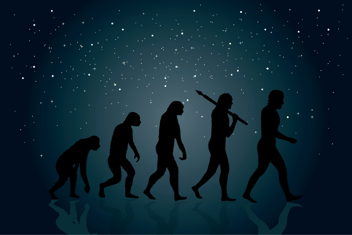

The Society for Practical Utopians
Working together to shape a brighter future for humanity
Evolution and Its Implications
By Herb Bowie
2018 May 22
tags: cultural evolution, evolution

A belief in evolution is one of the core Practopian principles. We state our belief in the following way:
We believe in evolution as an ongoing force in the world, and in particular are interested in the continuing evolution of humanity.
This follows, in part, from our belief in science as another core principle. In other words, we accept the scientific knowledge that all life forms on Earth, including humanity, evolved gradually over long periods of time, rather than being created once and forever in their current forms.
Moreover, in addition to our belief in genetic evolution, we also believe in evolution of human culture as another core principle.
We are particularly interested in cultural evolution, since what it means to be human is so intertwined with our cultural identity.
So to say that we believe in evolution means quite a bit more to us than simply a denial of creationism. We also mean to imply that we believe in natural selection as a process for improving things, including human culture.
To understand the implications of this belief, let’s break down natural selection into its necessary elements.
Resource Scarcity: If every entity had easy access to all the resources it might ever want or need, then natural selection can’t favor one thing over another.
Change: If nothing ever changes, then there can be no evolution.
Variation: If all entities in an environment are the same, then it is impossible to select one thing over another.
Preservation: Things that work must largely be preserved. Changing everything at once is generally a recipe for disaster. As in classic scientific experimentation, it’s best to keep all of the variables constant except one.
Growth and Decline: A particular entity, or group of entities, must have the ability to either grow – in size, in population, etc. – or decline. These two alternative outcomes, in effect, provide the carrot and the stick to motivate evolution.
Competition: Competition for scarce resources – both between entities and between groups of entities – results in growth for some, and decline for others.
Cooperation, Coexistence and Interdependence: Despite the element of competition, any ecosystem worth its salt also displays a great deal of cooperation and coexistence, both within species and between species. Evolution is not a winner-take-all enterprise. Entities and groups of entities often rely on one another.
So when we say that we believe in evolution, we are also, by implication, saying that we believe in the existence and usefulness of the underlying mechanisms of natural selection listed above.
And when we say that we believe in human cultural evolution, we mean to also imply that we believe in the existence and usefulness of these same underlying mechanisms when it comes to improving the human condition.
In other words, if we want a better watch, then we would be well advised to let the blind watchmaker do his job.
Tags
 Content at Practopians.org is Copyright © 2009 - 2018 by Herb Bowie except where otherwise noted
Content at Practopians.org is Copyright © 2009 - 2018 by Herb Bowie except where otherwise noted